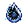

Capvt III · Forge et alchimie
Items & Recettes
craft, brassage & obtentionFiltre d'amour
Brassage alchimique Belzium
+
Belzium
+
 Awkward Potion
→
Awkward Potion
→
 Filtre d'amour
Filtre d'amour
- Mine du Belzium dans The End (Endstone Y 0–60, pioche nétherite ou Gronckle Iron).
- Brasse le Filtre d'amour : Belzium + Awkward Potion dans un alambic.
- Trouve une Light Fury sauvage (plaines ou biomes ouverts).
- Clic droit sur la Light Fury sauvage avec le Filtre — elle te donne l'Écaille-Compas.
- L'Écaille-Compas indique la direction du Night Fury légendaire dans The End.
- Suis la boussole jusqu'au Night Fury légendaire et apprivoise-le (Tier IV : potion Vision nocturne + saumon/morue, sans armure ni arme).
Écaille-Compas
Obtenu via la Light FuryFiltre d'amour
+
Light Fury sauvage
→

Écaille-CompasIndique en temps réel la direction du Night Fury légendaire dans The End. S'affiche dans le HUD quand tu le tiens en main.
Belzium
Extraction · The End Endstone Y 0–60
·
Endstone Y 0–60
·
 Pioche nétherite ou Gronckle Iron
→
Belzium
Pioche nétherite ou Gronckle Iron
→
Belzium
Minerai exclusif de The End. Requiert une pioche en nétherite ou en Gronckle Iron minimum pour être miné.
Gronckle Iron
Minerai · N'importe quelle pioche
Overworld Y −20 à 60
→
 Gronckle Iron
Gronckle Iron
Gronckle Iron
Minerai de l'Overworld — minable avec n'importe quelle pioche.
Dragon Staff
Craft façonné · Table de craft


Clic droit → téléporte ton dragon apprivoisé (Y+8, sol solide). Fonctionne cross-dimension (Overworld / Nether / End).